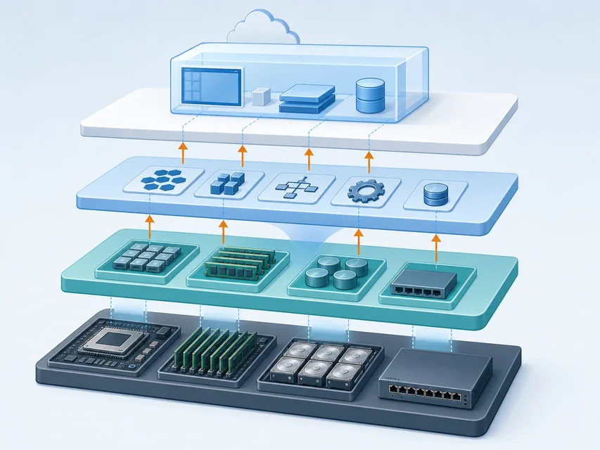
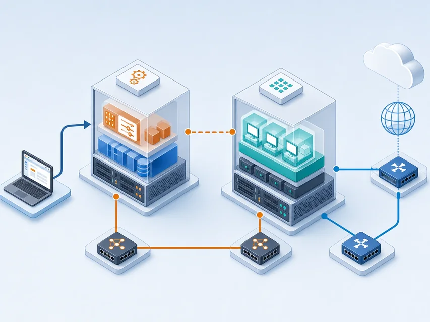

服务对象
面向一个组织的多个部门或受限用户群按需提供云能力
让组织明确云资源的控制边界与责任
 VER. 2608
Built with impress.js
VER. 2608
Built with impress.js
根据服务对象、控制边界和平台证据解释私有云如何提供云主机
私有云面向一个组织按需提供专用服务；组织或受托方按约定承担责任
面向一个组织的多个部门或受限用户群按需提供云能力
组织按约定管理资源池、数据位置、网络边界和资源策略；物理设施不一定由组织拥有
组织或受托方按约定承担平台、系统、数据和容量责任，双方要明确责任边界
私有云首先是服务对象和控制边界的安排，不是某个产品或机房的别名
两者的差异在服务对象、资源控制和责任边界，而不只在网络位置
提供商建设共享基础设施
外部用户按需申请资源，提供商管理底层平台
关注使用、配置、数据、访问和费用
为一个组织提供专用云资源
组织或受托方按约定管理云平台，内部用户按规则使用
关注控制、定制、容量、运维和恢复
企业在公有云中创建专用网络，不会因此自动改变部署模型
| 场景 | 请先判断 | 需要找到的证据 |
|---|---|---|
| 组织自建或委托第三方运营专用云平台 | 私有云／非私有云／证据不足 | 服务对象、控制和运维边界是否明确？ |
| 组织在公有云中创建虚拟私有云 VPC | 私有云／非私有云／证据不足 | 除网络隔离外，部署模型和平台责任是否改变？ |
| 部门共享一台虚拟化主机 | 私有云／非私有云／证据不足 | 是否有云服务入口、统一资源管理和回收机制？ |
| 面向公众按量提供云服务器 | 私有云／非私有云／证据不足 | 谁提供资源，服务面向谁？ |
判断私有云要同时寻找专用服务、资源控制和组织运维的证据
私有云能否带来收益，取决于组织或受托方能否落实相应运维
| 组织可获得的控制 | 可能带来的收益 | 需要承担或明确的责任 |
|---|---|---|
| 数据位置 | 更容易满足内部位置和访问要求 | 需要设计存储、权限和恢复 |
| 网络边界 | 可按业务定义内部网络路径 | 需要建设、监控和维护网络 |
| 基础设施配置 | 可以适配专用设备和既有设施 | 需要采购、替换、扩容或管理受托方提供的硬件 |
| 平台策略 | 可以定制资源、配额和流程 | 需要持续升级、排障和治理 |
私有云不消除风险，更多控制权也要求组织与受托方明确风险管理责任
私有云的结果取决于设计、运维和资源能力
可减少部分第三方直接管理数据的环节
仍需管理身份、补丁、权限、日志和备份
内部网络可以减少外部链路依赖
仍需处理设备、容量和故障切换
硬件和软件可以适配特殊业务
集成、升级和维护成本可能增加
私有云的优势来自控制条件，不来自“私有”这个标签本身
| 需求 | 请先选择控制收益 | 请再选择新增责任 |
|---|---|---|
| 数据必须留在组织控制范围 | 位置／访问／策略／其他 | 存储／权限／恢复／其他 |
| 内部用户需要稳定访问 | 网络路径／容量／策略／其他 | 网络／容量／故障切换／其他 |
| 业务依赖专用硬件 | 硬件组合／配置／策略／其他 | 采购／替换／兼容／其他 |
| 平台需要适配旧系统 | 管理流程／集成方式／策略／其他 | 集成／升级／长期维护／其他 |
每一个控制收益都应对应一项可执行的运维责任
虚拟化把物理资源呈现为虚拟资源，云管理平台把这些资源编排成云服务
资源呈现：物理资源 → 虚拟资源
服务编排：云管理平台 → 云主机
把物理处理器 CPU、内存、磁盘和网卡呈现为虚拟资源
编排主机、网络、存储、镜像、身份和配额

虚拟化提供资源抽象，云平台提供统一管理
用户提交请求，平台依据配额、实例类型、镜像和网络创建实例
从控制台 Dashboard、命令行或应用程序接口 API 提交申请
检查配额，协调主机、网络、存储和镜像
按配置生成一台云主机
用户入口是管理界面，不是新的资源层
两种平台都能管理虚拟化资源，但入口和维护边界不同
开源的云管理平台
重点是把计算、网络、存储、镜像和身份等资源编排为服务
组合灵活，但需要较强的平台集成和持续维护能力
商业的虚拟化与管理产品体系
重点是集中管理虚拟化主机、网络与虚拟机
产品支持较集中，但受商业产品体系和许可边界约束
| 任务 | 请先判断主要层次 | 对象与动作 |
|---|---|---|
| 在物理主机上呈现虚拟 CPU | 虚拟化层／平台／两者 | 谁抽象和分配底层资源？ |
| 为用户创建一台云主机 | 虚拟化层／平台／两者 | 谁组合镜像、实例类型、网络和配额？ |
| 让多个计算节点接受统一请求 | 虚拟化层／平台／两者 | 谁协调多台主机和服务入口？ |
| 为实例内操作系统提供虚拟网卡 | 虚拟化层／平台／两者 | 谁配置网卡，谁呈现设备？ |
控制节点调度，计算节点承载实例；管理网络连节点，外部网络支持实例访问
接收请求、调度资源并维护平台状态
提供 CPU、内存和虚拟化能力，运行云主机
管理网络连接平台组件；实例网络支撑访问，镜像提供初始系统，存储卷保存数据

管理网络承载平台协同，外部网络承载平台访问与实例外联
| 对照 | 管理网络 | 外部网络 |
|---|---|---|
| 连接对象 | 控制节点 ↔ 计算节点 | 用户／软件 ↔ 实例网络 |
| 承担任务 | 控制请求、状态和平台服务通信 | 平台访问、更新和实例外联 |
| 典型失败 | 地址、路由或防火墙阻断平台协同 | 路径、路由或防火墙阻断外联 |
| 权限边界 | 管理通道不等于实例外部访问 | 外部可达不等于内部管理权限 |
| 现象 | 请先判断检查面 | 请列出两项证据 |
|---|---|---|
| Dashboard 无法打开 | 控制面／管理网络／其他 | 填写服务、地址、端口或日志证据 |
| 请求提交后实例未运行 | 调度面／计算面／其他 | 填写节点、容量、配额或调度证据 |
| 实例启动但无法访问外部 | 外部网络路径／实例内部／其他 | 填写网卡、路由、防火墙或服务证据 |
| 控制台能登录但应用无响应 | 实例内部服务／外部路径／其他 | 填写系统、监听端口、日志或路径证据 |
沿着控制请求、资源调度、实例运行和外部访问逐层定位故障
网络、子网、实例类型和镜像定义实例配置，配额限制创建请求
网络定义范围，子网划分地址范围并安排实例的网络位置
规定处理器 CPU、内存和磁盘等规格
提供实例内操作系统或初始运行环境
平台依据网络、实例类型和镜像创建云主机，配额决定请求能否通过
平台对象的依赖关系比控制台页面顺序更稳定
平台依据网络、子网、实例类型和镜像创建实例，过程中观察对象和状态变化
决定实例的私有地址和云内通信范围
决定平台可以分配给实例的虚拟硬件规格
提供实例启动时使用的系统和初始文件
观察创建中、运行、错误和回收等状态变化
创建成功意味着平台完成了资源编排，不等于应用已经可用
| 缺失或受限项 | 请先判断受阻环节 | 需要检查的证据 |
|---|---|---|
| 网络或子网 | 哪条网络依赖会被阻断？ | 私有地址、网络范围和对象关联 |
| 实例类型 | 哪项资源决策无法完成？ | 规格、配额和调度要求 |
| 镜像 | 哪个启动条件缺失？ | 可用镜像与初始系统环境 |
| 计算节点资源不足 | 这是对象缺失还是容量不足？ | 节点状态、容量和调度错误 |
云平台的错误信息通常对应某个资源依赖或容量边界
预装环境让课堂聚焦资源证据；快照只提供恢复点，不等于独立备份
课前验证控制节点、计算节点和宿主机资源
确认管理网络与外部网络的角色和连通性
登录 Dashboard，展示当前平台对象
保留快照和当前环境证据，说明快照的恢复边界
每一步都要说明对应的平台对象和资源边界
01
02
03
04
05
06
07启动控制节点与计算节点
→ 检查管理网络与外部网络
→ 登录 Dashboard
→ 创建网络与子网
→ 创建实例类型
→ 从镜像创建云主机
→ 通过控制台取得登录证据确认哪个节点负责管理，哪个节点承载计算
确认网络、实例类型、镜像和实例的依赖
确认实例状态、系统登录与服务状态
记录对象的创建、关联和回收
| 证据 | 它证明什么 | 还要核对什么 |
|---|---|---|
| Dashboard 可以打开 | 控制入口／部分服务／待核对 | 控制节点、计算节点和其他平台服务 |
| 实例状态为运行 | 实例对象状态／应用状态／待核对 | 系统登录、网络路径和应用服务 |
| 实例控制台可以登录 | 实例系统／平台入口／待核对 | 外部网络路径和应用端口 |
| 应用端口返回结果 | 目标服务／平台整体／待核对 | 平台资源、节点状态和其他服务 |
一项证据只证明一层状态，不能代替整条链
实例状态、数据和平台对象可以分开变化；不同状态的效果取决于平台配置
让实例重新启动，重点观察服务恢复和数据是否保持
改变计算执行状态，但不一定删除平台对象或释放全部资源
停止实例运行，仍需确认磁盘、网络和快照是否继续保留
移除实例对象，执行前确认数据、卷和网络；镜像与快照另行核对
停止实例不等于完整回收，完整回收必须核对资源清单
| 观察对象 | 请指出云服务证据 | 请指出需承担或明确的责任 |
|---|---|---|
| 资源池 | 它如何体现统一资源服务？ | 还要规划哪些容量和故障边界？ |
| 自助入口 | 它如何支持按配置申请或释放实例？ | 需要哪些权限、配额和审计？ |
| 镜像与实例类型 | 它们如何支持环境和规格复用？ | 谁维护哪些镜像与规格策略？ |
| 生命周期 | 它如何体现创建、变更和回收？ | 哪些数据、卷、网络和快照必须核对？ |
私有云的云服务特征来自统一资源服务，专用性来自组织控制边界
按控制边界、平台角色、节点协同和生命周期逐项判断